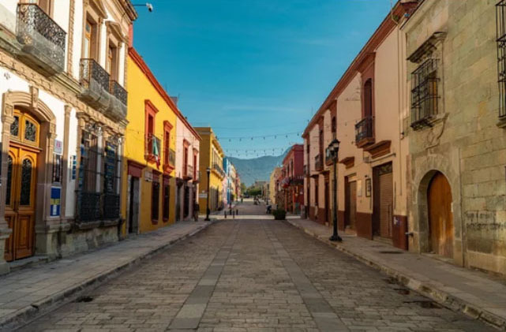

Vibrant Authenticity
Discover the Heart of Mexico
From ancient pyramids to bustling markets and sun-drenched coasts, embark on a journey that captures the true essence of Mexican culture.
Echoes of Empires & Sun-Drenched Stones
Iconic Landmarks
Wonders of the ancient world preserved in time, telling the stories of civilizations that shaped history.

Chichén Itzá
Experience the mathematical precision of the Maya at this UNESCO World Heritage site, home to the legendary Kukulkán pyramid.

Teotihuacán
Walk the Avenue of the Dead and ascend the Pyramid of the Sun in the "City of the Gods," just outside Mexico City.

Tulum
A breathtaking fusion of history and nature, where ancient temples watch over the crystalline waters of the Caribbean.
Where Ancient Souls Meet Vibrant Streets
Cities of Distinction
From metropolitan energy to colonial charm, discover the diverse urban soul of Mexico.

Mexico City
A dynamic metropolis where Aztec heritage, grand colonial architecture, and cutting-edge culture converge, Mexico City pulses with creativity, history, and endless energy.

Guadalajara
Known as the birthplace of mariachi and tequila, Guadalajara blends elegant plazas, vibrant arts, and enduring traditions in the cultural heart of western Mexico.

Oaxaca
Rich in indigenous traditions, colorful markets, and celebrated cuisine, Oaxaca enchants visitors with its colonial charm and deeply rooted cultural identity.
Cancún
Fringed by turquoise waters and white-sand beaches, Cancún offers a perfect blend of tropical beauty, lively resorts, and easy access to the ancient wonders of the Maya world.
Ancient Recipes, Vibrant Flavors
Rooted in ancient civilizations and enriched by centuries of cultural exchange, Mexican cuisine brings together aromatic spices, fresh ingredients, and time-honored recipes in a feast of color, flavor, and tradition.
Tacos al Pastor
Succulent marinated pork with pineapple, cilantro, and onions on a handmade tortilla.
Mole Poblano
A rich, complex sauce featuring over 20 ingredients including chili peppers and chocolate.
Chiles en Nogada
The patriotic dish of Mexico: poblano chiles filled with picadillo and topped with walnut cream.
メキシコ合衆国の歴史
United Mexican States
Mexico's history is characterized by its dramatic journey, from the prosperity of advanced ancient civilizations like the Aztecs and Mayans, through Spanish conquest and harsh colonial rule, to post-independence territorial losses, a revolution, and its evolution into a modern economic power.
古代・先植民地期
オルメカ文明 （紀元前1200年頃～）
巨大な頭部石像で知られる、メソアメリカの「母なる文明」が湾岸部で繁栄。
テオティワカンとマヤ （4世紀～9世紀）
巨大な「太陽のピラミッド」を持つ都市国家や、南部では高度な天文学・数学を誇るマヤ文明が栄える。
アステカ帝国 （1428年～1521年）
テスココ湖に浮かぶ壮大な水上都市「テノチティトラン（現メキシコシティ）」を首都に、強大な帝国を築く。
植民地時代（近世）
スペインによる征服 （1521年）
エルナン・コルテス率いるコンキスタドール（征服者）がアステカ帝国を滅ぼす。
新スペイン（ヌエバ・エスパーニャ）副王領の設置 （1535年）
北・中米の植民地支配の中心地となり、広大な銀山（サカテカスなど）の開発で巨万の富をスペインにもたらす。
近代（独立と相次ぐ領土喪失・介入）
独立への蜂起と達成 （1810年～1821年）
イダルゴ神父の「ドロレスの叫び」を機に独立戦争が勃発し、1821年に独立を達成（当初は「メキシコ帝国」、のちに共和国へ）。
テキサス独立とメキシコ・アメリカ戦争 （1836年～1848年）
米国の介入によりテキサスが分離。続く米墨戦争（1846年～1848年）に大敗し、国土の半分（カリフォルニアやニューメキシコなど）を米国に割譲する。
フランスの軍事介入と第二帝国 （1861年～1867年）
債務返済を理由にフランス軍が侵攻し、マクシミリアンを皇帝に据えるが、先住民出身のベニート・フアレス大統領らが激しく抵抗し撃退。
ポルフィリオ・ディアスの長期独裁（1876年～1911年）
近代化と経済発展を進める一方、独裁政治により貧富の格差が極限まで拡大。
近現代（メキシコ革命と一党独裁）
メキシコ革命 （1910年～1920年）
マデロ、サパタ、パンチョ・ビリャらが蜂起し、独裁政権を打倒。農地改革や労働者の権利を盛り込んだ先進的な1917年憲法が制定される。
「制度的革命党（PRI）」による70年独裁 （1929年～2000年）
革命の混乱後に結成された政党が、名称を変えながら約70年間にわたり政権を独占（「完璧な独裁」と称される）。1930年代には石油産業の国有化を断行。
現代
政権交代と麻薬戦争 （2000年～現在）
2000年の総選挙でPRIが敗北し、歴史的な政権交代が実現。しかし、2006年から政府が本格化した「麻薬組織（カルテル）との戦い」により国内の治安が極度に悪化、現在も大きな社会問題となっている。
現代の歩み
北米自由貿易協定（現USMCA）を背景に、世界有数の自動車・製造業の輸出大国、および豊かなマヤ・アステカ遺跡やビーチを活かした世界的な観光大国として、G20の一翼を担う超大国として発展を続けている。2024年には国家史上初となる女性大統領が就任した。
2つの文明のタイムライン比較 マヤとアステカの全盛期
マヤ文明の「古典期（全盛期）」の崩壊からアステカ帝国の台頭までは約500年の開きがありますが、マヤ文明自体はアステカ帝国と同じ時代にも存在していました。
1. マヤの「古典期崩壊」が西暦900年頃
マヤ文明の代名詞である巨大な石造ピラミッドや緻密な天文学、マヤ文字が最も栄えたのは西暦900年頃まで（古典期）です。この時期、グアテマラのティカルなどの大都市が気候変動や戦争により突如崩壊し、人々はジャングルを去りました。これが「500年の空白」の始まりに見える原因です。
2. アステカ帝国の建国は西暦1428年
アステカ人がテノチティトラン（現在のメキシコシティ）を首都とし、帝国として周辺を支配し始めたのは15世紀前半（1428年）になってからです。したがって、マヤの古典期崩壊（900年）からアステカの台頭（1428年）までは、確かにおよそ500年の差があります。
3. マヤ文明は滅んでいなかった（後古典期）
ここが最も重要なポイントですが、西暦900年にマヤ文明は全滅したわけではありません。生き残ったマヤの人々はユカタン半島北部に移動し、ウシュマルやマヤパンといった新しい都市を発興させました（後古典期）。
アステカとマヤは「同時代」に存在した
アステカ帝国がメキシコ中央部で大帝国を築いていたとき、ユカタン半島には後古典期のマヤ諸国家が健在でした。
・貿易の拠点：マヤ人たちは海路を使った商業民族として活躍しており、アステカ帝国とも交易を行っていました。
・スペイン人の到来：16世紀にスペイン人がやってきた際、彼らはアステカ帝国を滅ぼした（1521年）後、マヤの都市国家群とも戦っています。最後のマヤの都市タヤサルが陥落したのは、アステカ滅亡からさらに170年以上経った1697年のことです。
「マヤの最も輝かしい時代（古典期）」と「アステカ帝国の時代」の間には約500年のギャップがあります。しかし、文明としてのマヤは形を変えて生き残り、アステカ帝国と同じ時代を並行して生きていました。
フランスの軍事介入（メキシコ出兵・第二帝国）の終焉から、ポルフィリオ・ディアスが長期独裁体制を確立するまでには、約9年間の激動の移行期が存在します。
この9年間（1867年〜1876年）は、メキシコが外国の支配をはねのけ、自国の共和制を取り戻してから、ディアスの強力な独裁へと向かう「修復共和政（Restored Republic）」と呼ばれる極めて重要な歴史の転換点です。
1867年フランス傀儡政権（第二帝国）の崩壊
マクシミリアン皇帝が処刑され、フランス軍が撤退。
1867年ベニート・フアレス大統領の復帰
共和政が復活。ディアスは軍の英雄として頭角を現す。
1871年フアレスの大統領再選とディアスの反乱
ディアスが「再選反対」を掲げて武装蜂起（失敗）。
1872年フアレス大統領の急死
レルド・デ・テハダが次期大統領に就任。
1876年レルド大統領の再選とディアスのクーデター
ディアスが再び蜂起（トゥクステペク計画）し、勝利。
1876年ポルフィリオ・ディアス大統領就任
ここから約35年間に及ぶ長期独裁（ポルフィリアート）が開始。
1917年メキシコ憲法は、実は世界で初めて「社会権（労働者の権利や土地改革）」を明記した、社会主義的な思想から強い影響を受けた先駆的な憲法です。
1917年憲法に刻まれた「社会主義の影響」
この憲法は、1917年のロシア革命（ソ連誕生）よりも数ヶ月早く公布されました。当時は「世界で最も進歩的な社会憲法」と呼ばれ、後の各国の社会主義運動や労働運動に大きな影響を与えています。
第27条：土地は国家のもの（私有制限）
すべての土地・水資源の本来の所有権は「国家」にあると規定しました。これにより、ディアス政権下で外国人や大地主に奪われた土地を没収し、農民へ共同土地（エヒード）として再分配する法的根拠を作りました。
第123条：労働者の権利（労働法の先駆け）
1日8時間労働制、最低賃金の保障、児童労働の禁止、ストライキ権、産前産後休暇などが明記されました。当時の資本主義国では考えられないほど労働者を保護する内容です。
第3条：徹底的な反教会（政教分離）
カトリック教会が持つ莫大な財産や教育への関与を完全に禁止しました。教育は国家が行う「世俗的（宗教色を排除したもの）」でなければならないとし、教会の力を弱めて国家が主導する形を目指しました。これは社会主義の宗教否定に近いアプローチです。
なぜ「社会主義」を感じにくいのか？
1. 共産党による独裁ではなく「制度的革命党（PRI）」の誕生
メキシコは革命後、「制度的革命党（PRI）」という一つの巨大な政党が70年以上政権を握り続けました。彼らは社会主義の「労働者・農民の救済」という建前を使いつつも、実際には資本主義経済を維持し、アメリカとも良好な関係を保ちました。つまり、「社会主義的なスローガンを、資本主義的な体制を安定させるために利用した」のです。
2. アメリカという隣国の存在
メキシコが完全にソ連側の社会主義・共産主義国になってしまえば、隣国アメリカから武力介入されるリスクが非常に高かったため、現実的な中道路線（あるいは独自の「メキシコ流革命路線」）を歩まざるを得ませんでした。
まとめ
メキシコ革命と1917年憲法は、制度や法律のレベルでは非常に強く社会主義の影響を受けていました。しかし、その後の政治が「社会主義の理想」を看板にしつつ、中身は「現実的な資本主義と独裁」で運営されたため、表面的には社会主義の影が薄く見えてしまうという構造になっています。
この「社会主義的な憲法」が原因で、1920年代後半にメキシコ政府とカトリック教会が大激突した「クリステロの戦争（宗教内戦）」という激しい宗教対立へとつながりました
2000年のメキシコ政権交代の最大のきっかけは、71年間も一党独裁を続けてきた制度的革命党（PRI）に対する国民の「変化（チェンジ）」への強烈な渇望と、野党のカリスマ候補ビセンテ・フォックスによる巧みな選挙戦略です。
メキシコでは1929年から「制度的革命党（PRI）」が党名を変えながらずっと政権を握り、「完璧な独裁」と呼ばれていました。それが2000年の大統領選挙で、右派野党・国民行動党（PAN）のビセンテ・フォックスに敗れ、歴史的な政権交代が起きました。
政権交代を決定づけた6つのきっかけ
1. 1982年債務危機と「集票マシーン」の壊滅
石油暴落とアメリカの金利上昇により、メキシコ政府は事実上のデフォルト（債務不履行）に陥りました。IMFの命令で国有企業の民営化や市場開放を強制された結果、与党PRIがこれまで「補助金」や「公務員の雇用」を使って国民を囲い込んできた最大の利権・集票システムが崩壊しました。
2. 1988年選挙の不正による「正統性」の喪失
1982年の危機対応を巡ってPRIが内部分裂し、1988年の大統領選挙で野党が猛追しました。追い詰められたPRIは、開票中に意図的にコンピュータをシステムダウンさせるという前代未聞の不正で勝利を捏造。これにより国民の政府への信頼は完全にゼロになりました。
3. 1994年の経済危機（テキーラ・ショック）
1982年の危機からなんとか立ち直ろうと急激な市場開放を進めたものの、1994年末に再び通貨ペソが暴落する大危機が発生しました。国民の貯蓄は吹き飛び、「1982年に続いてまたか！PRIにはもう国を任せられない」という怒りが決定的なものになりました。
4. 相次ぐ暗殺事件と政府の「マフィア化」
1994年、PRIの次期大統領候補だったコロシオや党書記長が相次いで暗殺されました。身内の権力争いや麻薬カルテルとの癒着が公になり、国民は「政府自体が犯罪組織と変わらない」と激しい嫌悪感を抱くようになりました。
5. 民主的な選挙制度（IFE）の確立
国内外からの強い批判に耐えかねた政府は、1990年代に独立した選挙管理機関「連邦選挙庁（IFE）」を設立しました。これにより、2000年の選挙はメキシコ史上初めて「与党が不正を行えないクリーンな環境」で実施されることになりました。
6. ビセンテ・フォックスという型破りなカリスマ
野党から立候補したフォックスは、カウボーイハット姿の元コカ・コーラ社長でした。彼は「PRIを大統領府から叩き出せ！」とシンプルで過激な言葉を使い、変化を求める労働者や若者、さらに思想を超えた左派の支持層までをも巻き込む「戦略的投票」を成功させました。